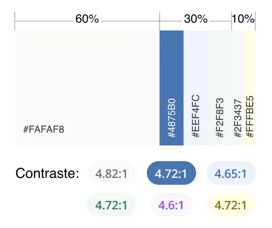
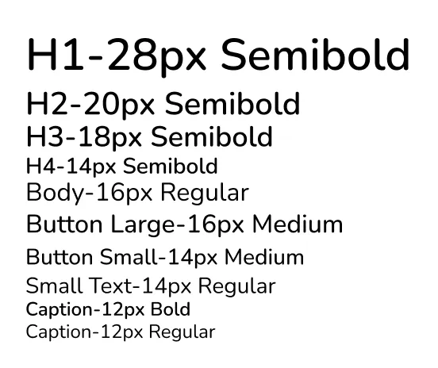
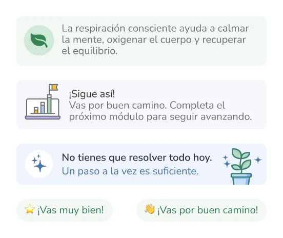

Sistema visual
Diseñando una experiencia cálida y accesible
El sistema visual buscó generar confianza y reducir la sensación de saturación mediante el uso de colores suaves, componentes consistentes y jerarquías claras.

Color
Tonos suaves para transmitir calma, progreso y acompañamiento.

Tipografía
Jerarquías simples y legibles para facilitar la lectura.

Componentes
Elementos reutilizables que aportan consistencia y claridad.

Refuerzo positivo
Mensajes breves que promueven continuidad sin generar presión.